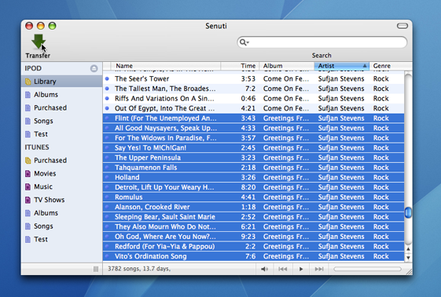

This section will help you get you started with Senuti as quickly as possible. It outlines steps you must take to prepare your iPod and simple copying.
Senuti is ready to be run as soon as you download and install it. A setup assistant will walk you through some of the basics of the application including allowing you to set a few preferences. The quickest way to get started with Senuti is to simply run it.
In order to use Senuti with an iPod, disk use must be enabled, and manual management of songs should also be enabled. If disk use is not enabled, follow these instructions to enable it:
*Holding the Command and Option keys will stop iTunes from automatically updating your iPod when you connect it
**Enabling the preference to manually manage your music will make it so you no longer have to remember to press and hold the Command and Option keys when plugging in your iPod. It is strongly recommended that you enable this feature so that iTunes never deletes the music on your iPod without prompting you.
To copy songs back to your computer, all you have to do is select the songs and click the transfer button in the toolbar of the application.

The songs will be copied to the your hard drive, and if you set Senuti up so that songs are automatically added to iTunes, then they will be added to iTunes as well.